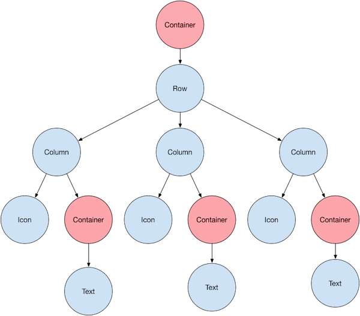

Flutter Widget初始化¶
引擎绘制原理¶
在分析FlutterUI框架之前，先来分析一下Flutter引擎是怎么用最少步骤把一帧绘制在屏幕上的
大象装进冰箱里¶
1.Flutter启动时调用scheduleFrame()会触发ui.window.onBeginFrame()回调方法调用
2.sceneBuilder 生成场景
3.数据回传到渲染引擎:ui.window.render(scene);
4.手势回调事件:ui.window.onPointerDataPacket = handlePointerDataPacket;，通过手势事件来触发不断的调用第三步骤中的方法
5.刷新一帧:ui.window.scheduleFrame();
通过上面的三个步骤，就可以实现一帧一帧的绘制的屏幕上，主要的一个内容是如何管理Scene对象的数据变化处理逻辑，不断的更新数据回传到渲染引擎进行计算
官方Demo¶

官方Demo 源码¶
ui.Picture paint(ui.Rect paintBounds) { final ui.PictureRecorder recorder = ui.PictureRecorder(); final ui.Canvas canvas = ui.Canvas(recorder, paintBounds); final ui.Size size = paintBounds.size; canvas.drawCircle( size.center(ui.Offset.zero), size.shortestSide * 0.45, ui.Paint()..color = color, ); return recorder.endRecording(); } ui.Scene composite(ui.Picture picture, ui.Rect paintBounds) { final double devicePixelRatio = ui.window.devicePixelRatio; final Float64List deviceTransform = Float64List(16) ..[0] = devicePixelRatio ..[5] = devicePixelRatio ..[10] = 1.0 ..[15] = 1.0; final ui.SceneBuilder sceneBuilder = ui.SceneBuilder() ..pushTransform(deviceTransform) ..addPicture(ui.Offset.zero, picture) ..pop(); return sceneBuilder.build(); } void beginFrame(Duration timeStamp) { final ui.Rect paintBounds = ui.Offset.zero & (ui.window.physicalSize / ui.window.devicePixelRatio); final ui.Picture picture = paint(paintBounds); final ui.Scene scene = composite(picture, paintBounds); ui.window.render(scene); } void handlePointerDataPacket(ui.PointerDataPacket packet) { for (ui.PointerData datum in packet.data) { if (datum.change == ui.PointerChange.down) { color = const ui.Color(0xFF0000FF); ui.window.scheduleFrame(); } else if (datum.change == ui.PointerChange.up) { color = const ui.Color(0xFF00FF00); ui.window.scheduleFrame(); } } } void main() { color = const ui.Color(0xFF00FF00); // The engine calls onBeginFrame whenever it wants us to produce a frame. ui.window.onBeginFrame = beginFrame; // The engine calls onPointerDataPacket whenever it had updated information // about the pointers directed at our app. ui.window.onPointerDataPacket = handlePointerDataPacket; // Here we kick off the whole process by asking the engine to schedule a new // frame. The engine will eventually call onBeginFrame when it is time for us // to actually produce the frame. ui.window.scheduleFrame(); }
Flutter架构¶
核心问题点¶
通过上面的分析，我们知道Flutter引擎对UI层的绘制，最关心的是:
1.输出的渲染对象
2.渲染对象如何改变
3.如何管理渲染对象的生成
4.如何管理树中对象的变化

输出的渲染对象¶
Flutter 层UI初始化过程，是在入口文件中调用runApp把应用Widget和系统的渲染引擎进行关联
void runApp(Widget app) { WidgetsFlutterBinding.ensureInitialized() ..attachRootWidget(app) ..scheduleWarmUpFrame(); }
attachRootWidget完成了RenderObject和Element进行绑定，同时调用BuilderOwer来对屏幕上显示的区域和那些需要进行重新绘制的Widget计算。
scheduleWarmUpFrame所有的数据准备好了之后，需要把一帧的数据传递到系统FlutterEngine中继续渲染出来发展屏幕上。pipeline是对已经计算好的数据进行处理提交到FluuterEngine上进行渲染
以上逻辑主要做了两个操作:
生成静态数据的关联对象:(只是保存一下逻辑数据)
1:RenderView:对应系统层渲染框架的Surface对象的数据抽象
2.Element: Widget的实例对象，Widget保存了控制自身的数据结构类型，Element对象是对是Widget的一个抽象表示，用在告诉BuilderOwer如何配置Widget，Element的生命周期_ElementLifecycle {initial,active,inactive,defunct,},调用`attachRenderObject`把渲染对象挂载到渲染树中
3.RenderObject:通过子类`RenderBox`对Element进行笛卡尔或者极坐标进行逻辑布局的坐标系，提供绘图层的Layer
4.BuildContext:提供了一个用户在Widget访问`RenderObject`的接口类
5.RenderObjectToWidgetAdapter：`RootRenderObjectElement`和`RenderView`管理在一起，根`RootRenderObjectElement`持有`RenderView`对象，那么在Element和RenderObject对象就构成了一个整体，可以同步更新数据
6.ParentData：用来在`RenderObject`中对保存数据，Widget是不可以被修改的，在Widget改变的时候，指定UI进行更新，把数据保存在`RenderObject`中，rebuild之后`RenderObject`对象还存在，除非保存数据的父节点不移除构建树中。
7.RenderObject->Constraints描述子wiget能够读取的数据，不描述笛卡尔坐标系和极坐标
2.动态数据:
1.buildOwner:从`RenderView`开始计算整个UI树中显示的是那一部分已经是哪一部分是需要更新，保存相关的`List<Element>`对象 2.[PipelineOwner](../flutterdev/FlutterWidgetinit/#pipeline):每一个`Element`中都会有一个`RenderObject`，主要使用来处理渲染引擎在FlutterUI层的逻辑数据,上一步已经把需要更新的数据添加到`List<RenderObject>` 3.调用`RenderView`的`compositeFrame`方法把场景数据传递到系统渲染引擎
RenderObject和Element关系¶
通过调用runApp中attachRootWidget把Element和RenderObject进行关联
RenderObjectToWidgetAdapter是Widget的一个子类，主要实现两个方法:
1.`createElement` 2.`createRenderObject`
createElement主要的功能是对Widget进行管理，Element是Widget的一个实例对象,Elment有不同的子类型
createRenderObject主要功能是产生RenderObject的对象，主要功能是完成坐标系统的构建，对Element提供配置参数，实现类是RenderBox
每一个Element对应一个RenderObject对象，RenderObject作为Element的成员变量进行使用
RenderObjectToWidgetAdapter的构造函数中的参数冲那里来的？¶
renderView: WidgetsBinding 继承 RendererBinding，在RendererBinding的initInstances方法中初始化renderView,系统surface,成员变量RenderBox是整个绘图的Root
顶层RootRenderObjectElement,只用顶层对象使用BuildOwner
RenderObjectToWidgetAdapter 类作为Flutter系统顶层的UI，作为用户UI和Flutter框架层的联合点
在WidgetsBinding中调用attachRootWidget进行渲染对象和Element对象进行关联,RenderView成为RootRenderObjectElement的成员变量,渲染对象和Element对象进行关联，可以同步更新UI
attachRootWidget 完成三件事:
RenderObjectToWidgetAdapter: 关联renderView和rootWidget
关联PipelineOwner
关联BuildOwner
void attachRootWidget(Widget rootWidget) { _renderViewElement = RenderObjectToWidgetAdapter<RenderBox>( container: renderView, debugShortDescription: '[root]', child: rootWidget, ).attachToRenderTree(buildOwner, renderViewElement); }
renderView对象¶
renderView对象是在RendererBinding中调用initRenderView对象进行初始化的，RenderView集成RenderObject实现RenderObjectWithChildMixin
RenderBox:是真正的渲染对象 RenderObject: 1.主要是保存RenderBox的数据实际数据和child的Constraints关系，同时保存对RenderBox操作的接口
2.保存和Child相关关联的数据ParentData
/// Creates a [RenderView] object to be the root of the /// [RenderObject] rendering tree, and initializes it so that it /// will be rendered when the engine is next ready to display a /// frame. /// /// Called automatically when the binding is created. void initRenderView() { assert(renderView == null); renderView = RenderView(configuration: createViewConfiguration(), window: window); renderView.scheduleInitialFrame(); }
通过上面的初始化过程已经把渲染对象初始化完成，并且关联自己到PipelineOwner对象中，详细的信息在后续介绍(owner._nodesNeedingLayout.add(this);)
BuildOwner：¶
widgets框架的manager类。此类跟踪需要重建的小部件，并处理其他任务作为一个整体应用于小部件树，例如管理非活动元素列出树并在必要时触发“重新组合”命令调试时热重新加载。main build owner通常由[widgetsbinding]拥有，并且是与build/layout/paint管道。可以生成其他生成所有者来管理屏幕外小部件树。若要将生成所有者分配给树，请使用的根元素上的[rootrenderobjectelement.assignowner]方法。
BuildOwner: 主要是查找PipelineOwner中记录的那些需要改变的渲染对象进行渲染，查找有哪些Element是污染了，需要进行从新布局和绘制的
进行提取=======================
reassemble：¶
使根在给定[element]的整个子树完全重建。当应用程序代码已更改并正在热重新加载，以使小部件树获取任何更改了实现。这很昂贵，除非在开发期间，否则不应该调用它。
RendererBinding的initInstances方法中调用drawFrame
buildScope：¶
查找在屏幕上显示的区域的Element,确定哪些元素是要进行处理，画布是一个没有边界的区域，所以在在绘制之前是需要进行确认哪些区域是需要进行处理的
void drawFrame() { ..... try { if (renderViewElement != null) ///开始计算在屏幕上显示一帧的范围 buildOwner.buildScope(renderViewElement); super.drawFrame(); buildOwner.finalizeTree(); } finally { 。。。。。。 } ....... }
初始化Widget¶
上面介绍了初始化系统框架成的渲染对象renderView,和记录Widget变化信息的PipelineOwner,真正执行测量、布局、绘制、的整个过程，并且已经初始化不同的BaseBind对象的子类，分解了Window对象的事件
RenderObjectToWidgetAdapter.attachToRenderTree对Element进行创建
将这个Widget进行填充，并实际将结果[renderobject]设置为[容器]的子级。如果element为空，则此函数将创建一个新元素。否则，给定元素将有一个计划好的更新以切换到此小部件。由[runapp]用于引导应用程序。
Only one [buildScope] can be active at a time.
RenderObjectToWidgetElement<T> attachToRenderTree(BuildOwner owner, [ RenderObjectToWidgetElement<T> element ]) { if (element == null) { owner.lockState(() { element = createElement(); assert(element != null); element.assignOwner(owner); }); owner.buildScope(element, () { element.mount(null, null); }); } else { element._newWidget = this; element.markNeedsBuild(); } return element; } @override String toStringShort() => debugShortDescription ?? super.toStringShort(); }
渲染RenderObject到RenderObjectToWidgetElement
在上一步中调用mount方法进行静态数据的处理操作
核心步骤:主要是在树中使用，遍历整棵树对每一个节点进行处理
初始化Element¶
在绑定渲染对象和跟Element之后进行，开始初始化Element对象
RenderObjectToWidgetElement<T> attachToRenderTree(BuildOwner owner, [ RenderObjectToWidgetElement<T> element ]) { if (element == null) {///顶级原生出手动调用createment(); RenderObjectToWidgetElement owner.lockState(() { element = createElement(); assert(element != null); element.assignOwner(owner); }); owner.buildScope(element, () { element.mount(null, null); ///开始遍历树处理每一个Widget }); } else { element._newWidget = this; element.markNeedsBuild(); } return element; }
是否创建节点的核心算法:¶
/// The following table summarizes the above: /// /// | | **newWidget == null** | **newWidget != null** | /// | :-----------------: | :--------------------- | :---------------------- | /// | **child == null** | Returns null. | Returns new [Element]. | /// | **child != null** | Old child is removed, returns null. | Old child updated if possible, returns child or new [Element]. |
Element updateChild(Element child, Widget newWidget, dynamic newSlot) { assert(() { if (newWidget != null && newWidget.key is GlobalKey) { final GlobalKey key = newWidget.key; key._debugReserveFor(this); } return true; }()); if (newWidget == null) { if (child != null) deactivateChild(child); return null; } if (child != null) { if (child.widget == newWidget) { if (child.slot != newSlot) updateSlotForChild(child, newSlot); return child; } if (Widget.canUpdate(child.widget, newWidget)) { if (child.slot != newSlot) updateSlotForChild(child, newSlot); child.update(newWidget); assert(child.widget == newWidget); assert(() { child.owner._debugElementWasRebuilt(child); return true; }()); return child; } deactivateChild(child); assert(child._parent == null); } return inflateWidget(newWidget, newSlot); }
inflateWidget 真正创建Element的地方¶
//为给定的小部件创建一个元素，并将其添加为给定槽中的元素。此方法通常由[updatechild]调用，但可以调用直接通过需要对创建进行更细粒度控制的子类元素。 如果给定的小部件有一个全局键并且已经存在一个元素具有具有该全局键的小部件，此函数将重用该元素可能从树上的另一个位置嫁接或重新激活(it from the list of inactive elements）而不是创建一个新元素。 此函数返回的元素已经被装入将处于活动生命周期状态。注:以上是对UI架构中使用到的逻辑继续分析，主要是把整个UI框架的数据表示和关联进行拆分和组合，能够提供UI变化是数据的跟踪和记录(静态数据保存逻辑)
final Element newChild = newWidget.createElement();遍历树，为每一个Widget生成实例对象Element,调用mount方法把Elment添加到树中
@protected Element inflateWidget(Widget newWidget, dynamic newSlot) { assert(newWidget != null); final Key key = newWidget.key; if (key is GlobalKey) { final Element newChild = _retakeInactiveElement(key, newWidget); if (newChild != null) { assert(newChild._parent == null); assert(() { _debugCheckForCycles(newChild); return true; }()); newChild._activateWithParent(this, newSlot); final Element updatedChild = updateChild(newChild, newWidget, newSlot); assert(newChild == updatedChild); return updatedChild; } } final Element newChild = newWidget.createElement(); assert(() { _debugCheckForCycles(newChild); return true; }()); newChild.mount(this, newSlot); assert(newChild._debugLifecycleState == _ElementLifecycle.active); return newChild; }
绘制第一帧¶
触发第一帧尽快执行，而不是等待引擎请求帧以响应系统“vsync”信号。这在应用程序启动期间使用，以便第一个帧（即可能很贵）得到一些额外的毫秒来运行。锁定事件调度，直到调度的帧完成。
如果已经用[scheduleFrame]计划了一个帧，或者[scheduleForcedFrame]，此调用可能会延迟该帧。
如果任何计划的帧已经开始，或者如果另一个已经调用了[schedulewarmupframe]，此调用将被忽略。prefer[scheduleframe]在正常操作中更新显示。
调用scheduleFrame触发window对象处理第一帧数据window.scheduleFrame();,将会触发window.onBeginFrame,开始执行，SchedulerBinding负责处理window对象的frame回调事件
void scheduleWarmUpFrame() { if (_warmUpFrame || schedulerPhase != SchedulerPhase.idle) return; _warmUpFrame = true; Timeline.startSync('Warm-up frame'); final bool hadScheduledFrame = _hasScheduledFrame; Timer.run(() { assert(_warmUpFrame); handleBeginFrame(null); }); Timer.run(() { assert(_warmUpFrame); handleDrawFrame(); resetEpoch(); _warmUpFrame = false; if (hadScheduledFrame) scheduleFrame(); }); lockEvents(() async { await endOfFrame; Timeline.finishSync(); }); }
在RendererBinding初始化initInstances时，addPersistentFrameCallback添加处理一帧的回调函数_handlePersistentFrameCallback,一下方法很简单，上一步中调用scheduleFrame()触发window.onDrawFrame回调函数执行
void _handlePersistentFrameCallback(Duration timeStamp) { drawFrame(); }
Pipeline¶
pipeline¶
管道所有者管理呈现管道。管道所有者提供了一个接口，用于驱动呈现管道并存储已请求访问的渲染对象的状态在管道的每个阶段。要刷新管道，请调用以下命令函数顺序：
1.[flushlayout]更新任何需要计算其布局。在此阶段中，每个渲染的大小和位置计算对象。渲染对象可能会弄脏其绘画或此阶段的合成状态。
2.[flushcompositingbits]更新任何已脏的渲染对象合成位。在此阶段中，每个渲染对象都将学习它的任何子级都需要合成。此信息用于选择如何实现视觉效果时的绘制阶段，例如剪辑。如果渲染对象有合成子对象，则需要使用[层]创建剪辑以便剪辑应用于composited child（将被绘制到它自己的[layer]）。
3.[flushpaint]访问任何需要绘制的渲染对象。在此期间阶段，渲染对象有机会将绘制命令记录到[PictureLayer]和构造其他合成的[Layer]s。
4。最后，如果启用了语义，[flushssemantics]将编译呈现对象的语义。此语义信息由提高渲染树可访问性的辅助技术。[renderBinding]保存渲染对象的管道所有者在屏幕上可见。您可以创建其他管道所有者来管理off-screen对象，它可以独立于屏幕上的渲染对象。
pipeline是在什么时候开始调用的？？
void runApp(Widget app) { WidgetsFlutterBinding.ensureInitialized() ..attachRootWidget(app) ..scheduleWarmUpFrame(); }
此方法由[handleDrawFrame]调用，它本身被调用在布局和绘制框架时由引擎自动执行。每个帧由以下阶段组成：
1.动画阶段：注册的[handlebeginframe]方法with[window.onbeginframe]，调用所有临时帧回调按注册顺序向[scheduleFrameCallback]注册。这个包含正在驱动的所有实例objects，这意味着所有活动的[animation]对象点。
2.Microtasks：在[handlebeginframe]返回后，任何由临时帧回调安排的运行。这通常包括[ticker]和[animationcontroller]的期货回调完成此帧。在[handlebeginframe]之后，[handledrawframe]，注册于调用了[window.onDrawFrame]，它调用所有的持久帧callbacks，其中最值得注意的是这个方法，[drawFrame]，它
3.布局阶段：系统中所有脏的[renderobject]都被放置out（参见[renderObject.performlayout]）。参见[renderobject.markneedslayout]有关将对象标记为脏的布局的详细信息。
4.合成位阶段：任何脏文件上的合成位[renderObject]对象已更新。湖[renderObject.markneedscompositingbitsupdate]。
5.绘制阶段：系统中所有脏的[renderobject]都是重新绘制（参见[renderobject.paint]）。这将生成[层]树。湖[renderbject.markneedspaint]了解有关标记对象的详细信息油漆脏了。
6.合成阶段：图层树变成一个场景发送到GPU。7。语义阶段：系统中所有脏的[renderobject]都有它们的语义已更新（请参见[renderobject.semanticsannotator]）。这个生成[semanticsnode]树。湖[renderbject.markneedssemanticsupdate]了解有关标记语义的脏对象。有关步骤3-7的更多详细信息，请参见[PipelineOwner]。
8.定稿阶段：在[DrawFrame]返回后，[HandleDrawFrame]然后调用后帧回调（使用[addPostFrameCallback]注册）。一些绑定（例如，[widgetsbinding]）为此添加了额外的步骤list（例如，请参见[widgetsbinding.drawframe]）。
@protected void drawFrame() { assert(renderView != null); pipelineOwner.flushLayout(); pipelineOwner.flushCompositingBits(); pipelineOwner.flushPaint(); renderView.compositeFrame(); // this sends the bits to the GPU pipelineOwner.flushSemantics(); // this also sends the semantics to the OS. }
flushLayout¶
BuildOwner在执行的过程中把需要会在的RenderObject对象查找出来保存在_nodesNeedingLayout列表中，通过树的深度来进行排序遍历，调用_layoutWithoutResize方法进行布局大小的改变，同时把需要绘制的RenderObject添加到_nodesNeedingPaint集合中便于下一个阶段进行绘制，改变_needsPaint为true
void flushLayout() { .... try { // TODO(ianh): assert that we're not allowing previously dirty nodes to redirty themselves while (_nodesNeedingLayout.isNotEmpty) { final List<RenderObject> dirtyNodes = _nodesNeedingLayout; _nodesNeedingLayout = <RenderObject>[]; for (RenderObject node in dirtyNodes..sort((RenderObject a, RenderObject b) => a.depth - b.depth)) { if (node._needsLayout && node.owner == this) node._layoutWithoutResize(); } } } finally { ... } }
flushCompositingBits¶
上一步中把相关的位置大小确认好之后，如果有多个控件有重叠的部分，需要进行合并,如何调用markNeedsPaint准备后续需要汇总的内容
void flushCompositingBits() { if (!kReleaseMode) { Timeline.startSync('Compositing bits'); } _nodesNeedingCompositingBitsUpdate.sort((RenderObject a, RenderObject b) => a.depth - b.depth); for (RenderObject node in _nodesNeedingCompositingBitsUpdate) { if (node._needsCompositingBitsUpdate && node.owner == this) node._updateCompositingBits(); } _nodesNeedingCompositingBitsUpdate.clear(); if (!kReleaseMode) { Timeline.finishSync(); } }
flushPaint¶
更新所有渲染对象的显示列表。此函数是渲染管道的核心阶段之一。在布局之后和重新放置场景之前进行绘制，以便场景与每个渲染对象的最新显示列表合成。有关如何使用此函数的示例，请参见[RenderBinding]。
通过布局和合成两步的计算操作，已经把需要汇总的数据计算出来，提供给画笔对象把RenderObject对象绘制在layer上，Window对象中render(Scene scene)就是在为此函数准备数据
void flushPaint() { ..... try { final List<RenderObject> dirtyNodes = _nodesNeedingPaint; _nodesNeedingPaint = <RenderObject>[]; // Sort the dirty nodes in reverse order (deepest first). for (RenderObject node in dirtyNodes..sort((RenderObject a, RenderObject b) => b.depth - a.depth)) { assert(node._layer != null); if (node._needsPaint && node.owner == this) { if (node._layer.attached) { ///此步骤是汇总的详细过程，发到后面在进行解析 PaintingContext.repaintCompositedChild(node); } else { node._skippedPaintingOnLayer(); } } } assert(_nodesNeedingPaint.isEmpty); } finally { ...... } }
renderView.compositeFrame()¶
上一步中已经把需要汇总的RenderObject进行了绘制，每一个RenderObject中都有一个ContainerLayer对象，作为每一个渲染对象的Layer,现在需要处理的是在Flutter已经做好了逻辑操作，需要把Dart对象转换为渲染引擎能够识别的对象:
Window对象中render(Scene scene)就是在为此函数准备数据，通过Navtive调用把数据传递到底层绘制
1.使用SceneBuilder对象来创建场景
2.把RenderObject对象中数据取出来构建Scene的原始数据
3.调用_window.render(scene);实现真正的数据传递到渲染引擎
/// Uploads the composited layer tree to the engine. /// /// Actually causes the output of the rendering pipeline to appear on screen. void compositeFrame() { try { final ui.SceneBuilder builder = ui.SceneBuilder(); final ui.Scene scene = layer.buildScene(builder); if (automaticSystemUiAdjustment) _updateSystemChrome(); _window.render(scene); scene.dispose(); assert(() { if (debugRepaintRainbowEnabled || debugRepaintTextRainbowEnabled) debugCurrentRepaintColor = debugCurrentRepaintColor.withHue((debugCurrentRepaintColor.hue + 2.0) % 360.0); return true; }()); } finally { } }
如何计算渲染对象的摆放位置和自定义控件¶
计算此渲染对象的布局。此方法是父控件要求子控件执行的主要入口点更新他们的布局信息。父对象传递约束对象它通知子级哪些布局是允许的。这子控件是必须遵守给定的约束。如果父级读取子级布局期间计算的信息，则“parentUseSSize”的父级必须传递true。在这种情况下，父母将：只要子项被标记为需要布局，就被标记为需要布局因为父级的布局信息依赖于子级的布局信息。如果父项使用默认值（false）“parentUseSSize”，子项可以更改其布局信息（根据给定的约束）而不通知父级。子类不应直接重写[Layout]。相反，他们应该重写[PerformResize]和/或[performLayout]。delegates将实际工作委托给[performResize]和[performLayout]。父级的[Performance Layout]方法应调用其所有无条件的子项。这是[布局]方法的责任在此处实现）如果子项不需要执行任何操作，则提前返回更新其布局信息。
flushLayout调用node._layoutWithoutResize();进行渲染对象的位置计算RenderView中的performLayout进行layout进行处理
@override void performLayout() { assert(_rootTransform != null); _size = configuration.size; assert(_size.isFinite); if (child != null) child.layout(BoxConstraints.tight(_size)); }
总结¶
1.通过上面的分析我们知道，Widget出现在屏幕上执行执行四个步骤就可以显示。FlutterUI框架中对Widow类进行拆分，对不同的回调事件进行不同的mixin类来进行处理
2.通过runApp把开发的Widget和系统框架层关联：1.Element和RenderObject对象进行绑定。2.触发系统绘制一帧
3.分别处理不同的实际功能BindingBaseGestureBinding, ServicesBinding, SchedulerBinding, PaintingBinding, SemanticsBinding, RendererBinding, WidgetsBinding
4.通过RenderObjectToWidgetAdapter对象来进行Element、RenderObject对象进行关联，主要是处理Widget的数据和RenderView中的数据
5.Element管理Widget数据
6.RenderObject面向Flutter引擎接口，提供绘制UI数据的Layters
7.BuildContext提供了Widget中访问RenderObject对象的接口
8.BuildOwer主要是变量Element查找出那些Element是需要重新进行绘制的
9.Pipeline插座RenderObject对象，处理那些事渲染对象是需要在Layer进行Layout、填充、绘制的
10.调用RenderView中的方法，把生成的数据调用window.render(scene)传递到渲染引擎
11.RenderObject是如何摆放在正确的位置上的自定义控件